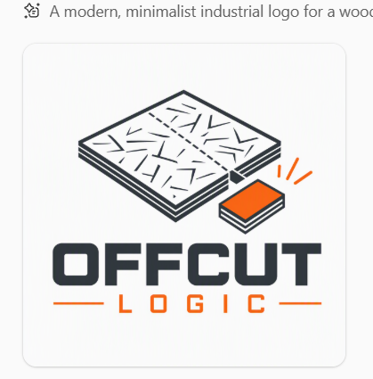

Sheet & solid offcuts on the rack — job parts at a glanceOffcut Logic is for the shop floor: know what offcuts you already have before you cut fresh sheet or lumber, and keep a short list of parts a job still needs. It is a companion to Sheet Logic Builder (surface sheathing estimates) — not a cut-list optimizer. Planning and counts only — verify every size on site before cutting.
Works with Sheet Logic Builder
In Builder, use Save this tab for Offcut… on the tab you verified to save a .wsoffcut.json file.
In Offcut Logic, choose Import Job Pieces… to load that file into New Job Parts.
Builder and Offcut Logic use separate licenses.
Disclaimer (summary)
Offcut Logic is for planning and estimates only. Verify every cut, count, and fit on site. Wood Solutions is not liable for material waste or jobsite decisions based on this software.